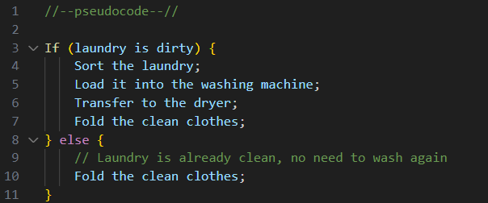
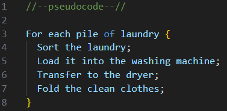
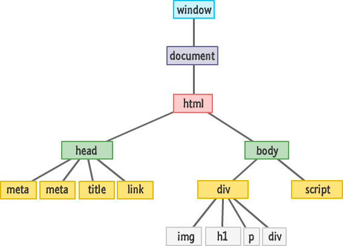

javaScript & the DOM
Technical Blog

HTML, CSS & Javascript together.
Imagine building a webpage is like growing a tree;
HTML (Structure): Think of HTML as the tree's trunk. It provides
the basic structure and foundation for the tree. Just like the
trunk supports the branches, HTML forms the backbone of your web
page, defining it's essential elements and layout.
CSS (Style): Now, envision CSS as the tree's leaves and flowers
which attract the attention of people, birds and insects. CSS is
responsible for the aesthetics and presentation. With CSS, you
can control the colours, fonts, spacing and overall visual style
of your web page.
Javascript (Behaviour): Lastly, consider JavaScript as the
tree's lifeforce - that allows the tree to adapt and respond to
its environment. To grow back branches when a storm rips through
it, to expand root systems when water is scarce during a
drought, or to shed it's leaves in winter and grow them back
when it becomes summer. Javascript adds interactivity and
dynamic behaviour to your website, enabling features like
animations, user input handling, and real-time updates. It's the
dynamic force that brings your web page to life.
Just as a healthy tree needs a strong trunk, vibrant leaves, and
a dynamic interplay with the environment, a well-designed
website requires a solid HTML structure, appealing CSS styling,
and interactive JavaScript functionality to provide users with
an enjoyable and seamless experience. The HTML forms the
foundation, CSS enhances the visual aesthetics, and JavaScript
adds the dynamic and responsive elements, creating a digital
ecosystem that captivates and engages visitors, much like the
harmony between a tree's trunk, leaves, and roots in nature.
Flow Control and Loops explained:
Control Flow:
Scenario: You have a pile of laundry and you need to decide the
sequence of steps to get it all cleaned and sorted.
Control flow is like creating a set of instructions that dictate
the order in which tasks are performed. For exampled, you might
decide the first step is to sort the laundry, then load it into
the washing machine, take it from the washing machine and
hanging it out to dry, and then finally bring it inside to fold
(leaving it in a pile)

Here, the 'if-else' statements represents the control flow. If
the laundry is dirty, perform the washing steps; otherwise, skip
directly to folding.
Loops:
Scenario: You have seperate piles of white and colored clothes,
and you want to repeat the same washing and drying steps for
each pile.
Loops are like a repeated set of instructions. In the Laundry
scenario you can use a loop to wash, dry and fold each pile of
clothes without writing the same code multiple times.

The loop here allows you to iterate through each pile of
laundry, performing the same set of actions for each one. It
saves you from duplicating the code for white cloths and colored
clothes.
Control flow helps you define the order of operations based on conditions and loops enable you to repeat a set of actions for multiple items or scenarios. In the context of sorting out the large pile of clothes sitting on my couch, control flow helps me decide what needs to be washed or not, and loops will let me efficiently process each pile of laundry with the same set of steps
What is the DOM?
The Document Object Model (DOM), is an interface that represents
the structure everything that you see inside your browser as a
tree of objects. The Document is the HTML file and the objects
represents the elements, attributes and text within that
document. The DOM provides a way for developers to manipulate
the structure, style and content of a web page dynamically.
Below is a simple view of what the DOM would look like:

Here's a brief explanation of how you might interact with the
DOM using JavaScript:
- Accessing Elements: You can use Javascript to select and manipulate HTML elements on a web page. For example, if you have na HTML element with an ID of "myElement", you can access is using the follwoing JavaSciprt code: var element = document.getElementById("myElement");
- Modifying Content: Once you have access to an element you can modify its content. For instance, you can change the text inside a paragraph element: element.innerHTML = "new content here!";
- Changing Styles: JavaScript allows you to dynamically change the styles of HTML elements. You might alter the colour of a heading, for example: element.style.color= "blue";
- Event Handling: The DOM enables you to respond to user actions, also known as event listening, such as clicks or key presses. For example a button being clicked: button.addEventListener("click", function());
Interacting with the DOM allows developers to create dynamic and responsive web pages by manipulating the content and structure based on user actions or other events.
Arrays and Objects.
Arrays and Objects are containers for storing information. They
are similar but not the same.
Arrays: Are like simple containers for holding a list (or array)
of items. Each item in the list is assigned a number called an
index, starting at 0 and counting upwards through the list in
order.
Objects: Are containers that can group information together
using keys for each item inside them. Think of it like a contact
in your phone that contains a person's name, their number, and
address – each piece of information is associated with a
specific key.
To paint a picture to help understand the difference between
these two and how information is accessed consider this;
Arrays: Imagine you have a shopping bag (Array) filled with
fruit. Each piece of fruit (item) is numbered in the bag in the
order is it put in. As you've gone through the super market you
have grabbed (in order), an apple, a banana, a pear, and an
orange. If you then wanted to retrieve the pear you'd need to
say "I want the fruit at position 2 (remember the apple is 0 as
we start counting there)", and you would get the third item or
the pear from your bag.
Objects: Now, think of a shopping trolley (Object) where you've
organized different types of groceries. Each grocery item has
its own tag or label (key). For instance, you have a "Fruits"
section in your trolley, and under that you find an apple with
the label saying "type:apple". So to get the apple, you'd say,
"I want the fruit with the label 'Type" being 'Apple' from my
trolley.
Functions.
Functions are the bread and butter behind the power of
JavaScript. They are versatile ways to complete specific tasks.
In essence, you tell a function what it is and what it does, and
then call it when you need it to perform it's task.
Let's take for example baking. Now imagine you have a baking
robot that bakes for you everytime you give it instructions, You
give it a set of steps to make something, and it goes ahead and
bakes it.
If you had to tell your robot everytime you wanted a cake, to
measure out flour, then measure baking powder and add it to the
flour, and then cream butter and sugar together, and so on and
so forth to make a cake it could open you up to a whole range of
errors. What if you forgot to tell it to preheat the over, or
you misspoke and it grabbed flowers from your garden instead of
flour. Your super handy baking robot might become more of a
nuisance than a help.
This is where having a recipe comes in handy. If you wrote the
insructions for baking a cake into a recipe and all you had to
when you wanted a cake was to give your robot the recipe, it
might just be that you get a perfect cake every single time.
Similarly, a function is like a recipe in programming. You
define the steps and give it a name, like "bakeCake". When you
want to bake a cake, you call the function by it's name, and
your little robot knows to follow those steps.
Functions save time and make your code more organized, they can
be called on as needed and allow for more complex tasks to be
made. (Imagine if our robot didn't have a prebuilt set of
instructions for measuring, whisking, pouring and cracking eggs.
We're lucky those methods are prebuilt in.)